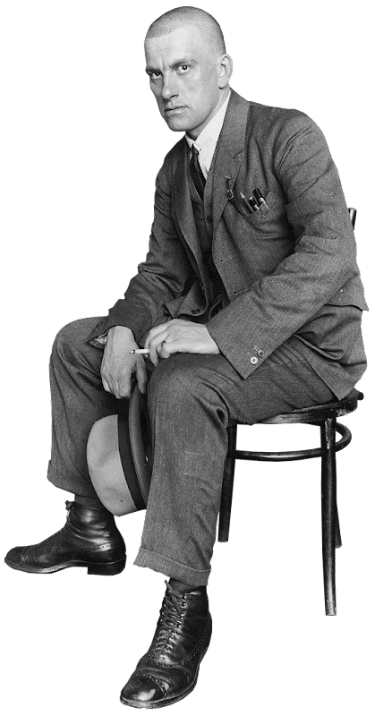
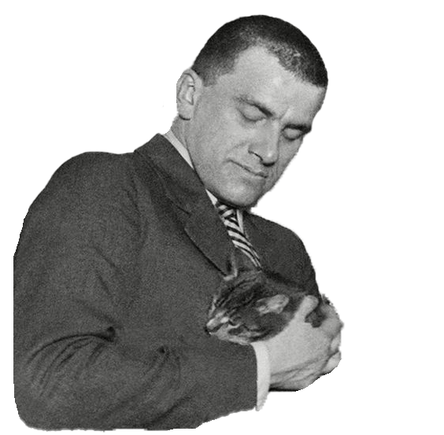
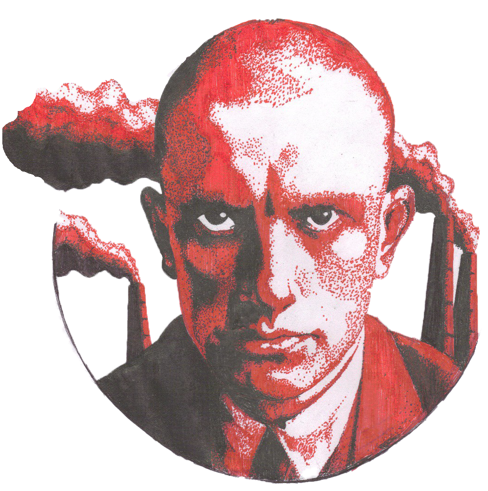
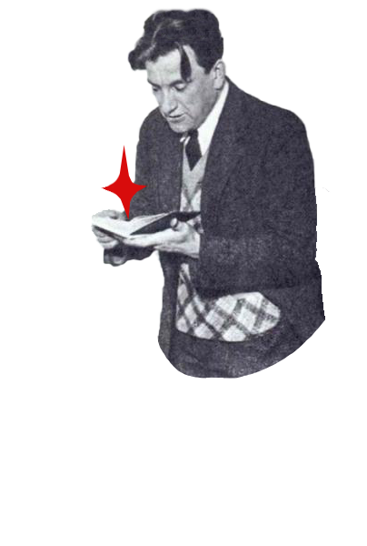
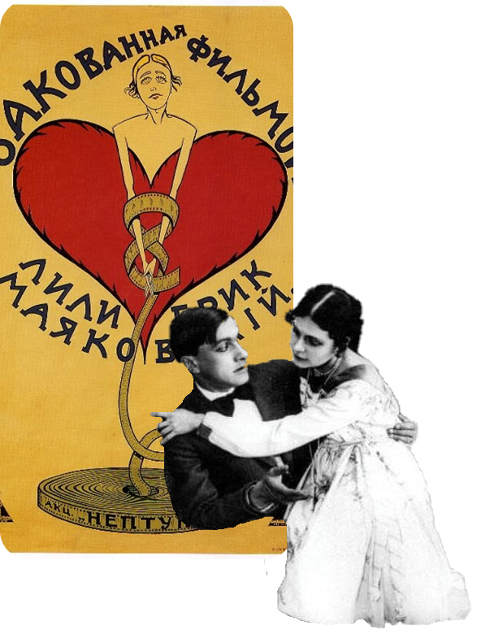
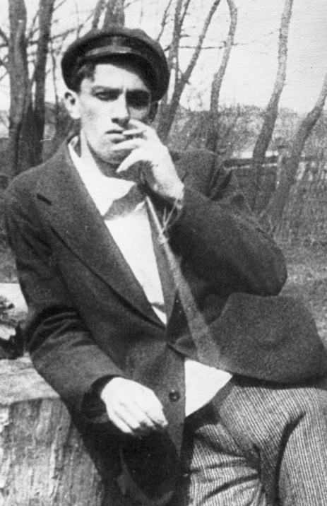
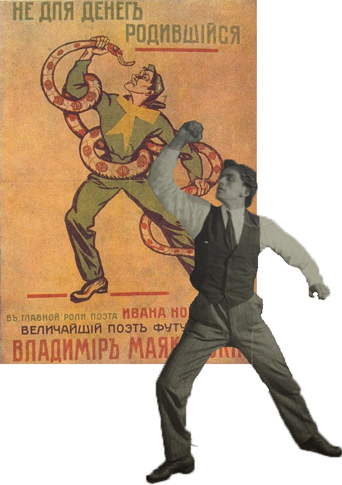
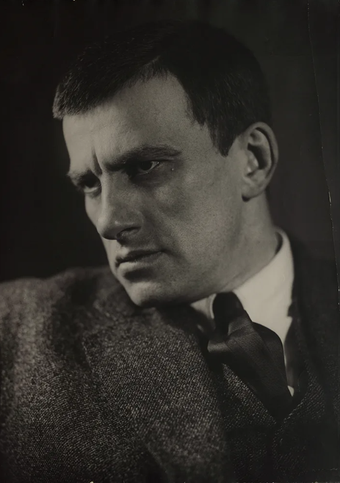

«Ненавижу всяческую
мертвечину!
Люблю всяческую
жизнь!»
Будущий всемирно известный поэт Владимир Маяковский родился 19-го июля 1893 года по новому стилю в небольшом городе Багдати, в западной части современной Грузии. До некоторых пор, населенный пункт носил имя самого Маяковского, а после распада СССР был переименован обратно.
Молодой человек происходил из рода обедневшего дворянства. Отца звали Владимиром Константиновичем, он работал лесничим в Эриванской губернии (недалеко от нынешней столицы Армении). Позже мужчину перевели в Багдати, где он продолжал трудиться. Отец Маяковского имел дворянские корни, происходил из запорожского казачества. Мать молодого человека звали Александрой Алексеевной. О ней известно несколько меньше. Точно можно сказать, что в роду у женщины были кубанские казаки. Сама же она появилась на свет в станице Терновской. Владимир был не единственным ребенком в семье. Помимо него у отца и матери было еще двое дочерей. Кроме них у Маяковского были братья. Но оба умерли в совсем юные годы.
После смерти отца финансовое состояние семьи серьезно пошатнулось. Маяковский с сестрами и матерью переехали в Москву. Здесь молодой человек поступил в 4-й класс гимназии. Но окончить образование так и не сумел, был исключен. Причиной стала невозможность и дальше финансировать обучение. В 1908-м году Маяковский вышел из школы, отчисленный за неуплату.
Творческая биография Владимира Маяковского началась еще в период обучения в гимназии. Его первое стихотворение было напечатано в нелегальном издании. После отчисления молодой человек еще больше заинтересовался революционными идеями. Взялся изучать положения марксистской теории. Связался с левым движением и стал членом РСДРП. Маяковский принимал участие в революционной деятельности. Его трижды привлекали к ответственности, выдвигали разные обвинения: от работы в подпольной типографии до связи с членами движения анархистов. В первый раз его освободили по малолетству. Второй и третий за недостатком улик.
Однако же пока шло следствие, Владимир Маяковский находился в тюрьме. Из-за скандального характера и конфликтности, молодого поэта переводили из одного учреждения в другой и так несколько раз. Длительное время он находился в камере-изоляторе. Всего же поэт пробыл в неволе почти год. Заключение не сломило его дух. Тут он впервые попробовал свои силы в серьезном творчестве. За период пребывания за решеткой молодой человек написал целую тетрадь стихотворений. Однако сам он оценивал раннее творчество крайне критически и радовался, что надсмотрщики забрали его наработки. В 1910 году молодой человек освободился из заключения. В этот же период он вышел из партии, сосредоточился на литературной деятельности.
Однако всего через год Маяковский познакомился с художницей Евгенией Ланг, после чего заинтересовался живописью. Литератор круто поменял вектор своих увлечений и поступил в специализированное худ. училище в Москве. Стать серьезным живописцем ему так и не удалось (или, скорее, не захотелось). Однако благодаря учебе он познакомился с Давидом Бурлюком, который возглавлял группу творческих людей-футуристов под названием «Гилея». Маяковскому очень понравилось направление кубофутуризма и он присоединился к творческой группе. Уже в 1912 в свет вышло первое серьезное стихотворение поэта, «Ночь». А 30-го ноября литератор выступил публично.
Всего через год Маяковский выпустил цикл из 4 стихов под общим названием «Я». Позже произведения вошли в более крупный сборник. С этого момента начался активный творческий рост литератора. Он печатался в самых разных периодических изданиях. Его произведения появлялись в альманахах «Дохлая луна», «Молоко Кобылиц» и прочих.В этот же период Владимир Маяковский впервые пробует свои силы в драматургии. В 1914-м сам поэт и его коллега Бурлюк были отчислены из художественного училища за публичные выступления. В 1914 же поэт берется за работу над одним из крупнейших произведений, поэмой «Облако в штанах». Вскоре начинается Первая Мировая Война. Россия выходит на поля сражений. В честь этого события Владимир Маяковский готовит стихотворение «Война объявлена». Вскоре он решает принять участие в боевых действиях и записывается добровольцем. Но на фронт его не берут, поскольку тот политически неблагонадежен. После оскорбительного отказа Маяковский охарактеризовал царскую армию в отдельном произведении «Вам!». Почти через 2 года Владимир познакомился с супругами Осипом и Лилей Брик. Какое-то время поэта служил в Петрограде, в войсках. Однако солдатам печататься не разрешали.Творить тот не переставал и передавал свои произведения через Осипа Брика, который публиковал их сам. Так на свет появились новые стихотворения за авторством Маяковского: «Облако в штанах», «Флейта-позвоночник», «Я и Наполеон» и прочие. Владимир Владимирович работал как в относительно малых формах, так и в крупных. Готовил поэмы, которые широко известны до сих пор. Революцию 1917-го года Маяковский встретил с энтузиазмом. Он поддерживал начинания нового правительства и участвовал в работе созданных большевиками комитетов. Примечательным событием стало сотрудничество с властями при аресте генерала П.И. Секретева, под началом которого находился Маяковский. Интересно, что именно из его рук несколькими месяцами ранее поэт получил медаль. Через некоторое время, когда страсти после смены общественного строя улеглись, у литератора появилась возможность осмыслить произошедшее. В 17-18 годах в свет вышли произведения на революционную тему, «Ода революции», «Наш марш» и прочие.Одной из поворотных точек творчества В.В. Маяковского стала пьеса «Мистерия-буфф, социально-бытовое произведение, посвященное недавним событиям. К годовщине Октябрьской революции оно было закончено. Постановщиком выступил Всеволод Мейерхольд. Примерно в тот же период Владимир Владимирович пробовал свои силы в качестве режиссера, сценариста и актера, осваивая только зарождающееся искусство. В 1918 Маяковский взялся за организационную работу. Он создал группу «Коммунистический футуризм» или «Комфут». Всего парой лет позже, в 1922-м, учредил издательство «МАФ», где печатал свои книги. Маяковский же стоял у истоков творческой группы «ЛЕФ», «Левый фронт искусств». Здесь он издавал свои новые произведения. В их числе: «Владимир Ильич Ленин», «Про это» и иные.Помимо самого Маяковского в издании творческой группы печатались другие крупные поэты: Борис Пастернак, Николай Асеев, Б. Арватов, Осип Брик и прочие. На свет появилось аж 7 толстых журналов со стихами известных поэтов. После начала гражданской войны Маяковский не переставал творить. Из-под его пера вышла поэма «Хорошо». Уже в 22-23 годах поэт развивал тему необходимости мировой революции. Подобные мотивы можно найти в текстах «Пятый интернационал», «Моя речь на Генуэзской конференции» и в прочих произведениях. В тот же период, начиная с 1922 года, Владимир Маяковский отправился в путешествие за границу. Он побывал во Франции, Латвии. Написал несколько очерков о других странах. В 1925-м на тот момент уже известный и уважаемый поэт отправился в Соединенный Штаты, где провел несколько месяцев, читая доклады и путешествуя по стране. После возвращения на родину Маяковский начал ездить по всему Советскому Союзу, выступая в разных частях страны. В этот же период под впечатлением от государства и недавней поездки он написал новые произведения: «По городам Советского Союза», «Товарищу Нетте, пароходу и человеку».
Актёрский период в жизни Маяковского продлился недолго — с 1914 по 1918 годы. Это время расцвета коммерческого кинематографа, большинство творений которого не дожило до
наших дней по разным причинам. Во-первых, с появлением звукового кино они безнадежно устарели, уже не привлекали зрителя и стало бессмысленно хранить такое количество материала.
Во-вторых, власть поменялась и какие-то фильмы попали под цензуру.Сам же Маяковский относился к своим ранним работам достаточно легко и даже иронично. Например, в письме к своей
музе Лиле Брик (а их отношения начались именно в тот период) он пишет:
Кинематографщики говорят, что я для них небывалый артист. Соблазняют речами, славой и деньгами…
В 30-е годы Владимир Маяковский много болел. Но это было только частью беды. Проблемы сыпались одна за другой как из рога изобилия. С одной стороны трудности со здоровьем. С другой — отъезд семейства Брик, из-за которого поэт чувствовал себя одиноким, брошенным человеком. С третьей — нападки критиков творчества. Венцом же были конфликты и недомолвки с Вероникой Полонской, которая стала последней возлюбленной литератора. 14-го апреля 1930 года Владимир Маяковский умер. Поэт выстрелил себе в грудь и скончался от ранения. Перед этим он оставил подробную записку. Версии о насильственной смерти на этом основании даже не рассматривались. Хотя до сих существуют другие теории.

200
Написал
произведений
8
Написал
сценариев
400
Нарисовал
плакатов
4
Поставил
пьесы
«Днём у меня вышло стихотворение.
Вернее - куски. Плохие...»
Годы Творчества
Читаю строки Бурлюку. Прибавляю - это один мой знакомый. Давид сотановился. Осмотрел меня. Рявкнул: “Да же ж вы сами написали! Да вы же ж гениальный поэт!” Всегдашней любовью думаю о Давиде. Прекрасный друг. Мой действительный учитель. Бурлюк сделал меня поэтом. Читал мне французов и немцев. Всовывал книги. Ходил и говорил без конца. Не отпускал ни на шаг. Выдавал ежедневно 50 копеек. Чтоб писать не голодая
В. Маяковский

А вы могли бы
Я сразу смазал карту будня,
плеснувши краску из стакана;
я показал на блюде студня
косые скулы океана.
На чешуе жестяной рыбы
прочёл я зовы новых губ.
А вы
ноктюрн сыграть
могли бы
на флейте водосточных труб?

Послушайте
Послушайте!
Ведь, если звезды зажигают -
значит - это кому-нибудь нужно?
Значит - кто-то хочет, чтобы они были?
Значит - кто-то называет эти плевочки
жемчужиной?
И, надрываясь
в метелях полуденной пыли,
врывается к богу,
боится, что опоздал,
плачет,
целует ему жилистую руку,
просит -
чтоб обязательно была звезда! -
клянется -
не перенесет эту беззвездную муку!
А после
ходит тревожный,
но спокойный наружно.
Говорит кому-то:
"Ведь теперь тебе ничего?
Не страшно?
Да?!"
Послушайте!
Ведь, если звезды
зажигают -
значит - это кому-нибудь нужно?
Значит - это необходимо,
чтобы каждый вечер
над крышами
загоралась хоть одна звезда?!
Остальные произведения
Облако в штанах
1914-1915
«Начало 14-го года. Чувствую мастерство. Могу овладеть темой. Вплотную. Ставлю вопрос о теме. О революционной. Думаю над «Облаком в штанах»»
На написание первой главы поэмы поэта вдохновил романтический эпизод во время поездки футуристов по России. В Одессе он знакомится с красавицей, молодой художницей и скульптором Марией Денисовой, в которую влюбляется. Несмотря на симпатию к поэту, девушка отказалась вступать с ним в близкие отношения.
Тетраптих — литературное, музыкальное или кинематографическое произведение, состоящее из четырёх частей, объединённых сюжетом и авторским замыслом.
Вашу мысль,
мечтающую на размягченном мозгу,
как выжиревший лакей на засаленной кушетке.
буду дразнить об окровавленный сердца лоскут,
досыта изъиздеваюсь, нахальный и едкий.
У меня в душе ни одного седого волоса,
и старческой нежности нет в ней!
Мир огро́мив мощью голоса,
иду — красивый,
двадцатидвухлетний.
Читать далее...
Флейта-позвоночник
1915
Работа над поэмой была начата осенью 1915 года. Известно, что не позже ноября того же года она была завершена. Изначально она называлась «Стихи ей». Автор посвятил поэму Лиле Юрьевне Брик. Отдельным изданием поэма вышла в феврале 1916 года в издательстве «Взял».
За всех вас,
которые нравились или нравятся,
хранимых иконами у души в пещере,
как чашу вина в застольной здравице,
подъемлю стихами наполненный череп.
Все чаще думаю -
не поставить ли лучше
точку пули в своем конце.
Сегодня я
на всякий случай
даю прощальный концерт.
Читать далее...
Фильмы
1914-1928
“Для вас кино — зрелище. Для меня — почти миросозерцание. Кино — проводник движения. Кино — новатор литератур. Кино — разрушитель эстетики. Кино — бесстрашность...”
Владимир Маяковский интересовался не только поэзией и живописью. В 1913 году он дебютировал
в театре: сам написал трагедию «Владимир Маяковский», сам поставил ее на сцене и сыграл главную
роль. В этот же год поэт увлекся кинематографом — начал писать сценарии, а спустя год впервые
снялся в ленте «Драма в кабаре футуристов №13» (картина не сохранилась). Во время Первой мировой
войны Владимир Маяковский состоял в авангардном объединении «Сегодняшний лубок».
Его участники — Казимир Малевич, Давид Бурлюк, Илья Машков и другие — рисовали патриотические
открытки для фронта, навеянные традиционным народным лубком. Для них создавали простые
красочные картинки и писали короткие стихи, в которых высмеивали врага.
Закованная фильмой
1918
«Закованная фильмой» — немой
художественный фильм режиссёра
Никандра Туркина по сценарию
Владимира Маяковского. Фильм снят
в Петрограде на студии "Нептун".
Частично утерян.
Сюжет
Художник скучает, Он ходит по улицам, ищет неизвестно чего: на бульваре подсаживается к женщине, заговаривает с ней, но женщина вдруг становится прозрачной и у неё вместо сердца оказываются шляпка, ожерелья, шляпные булавки....
Барышня и хулиган
1918
«Барышня и хулиган» — художественный немой фильм 1918 года режиссёра Евгения Славинского по сценарию Владимира Маяковского.
Сюжет
Сценарий фильма основан на повести итальянского писателя Эдмондо де Амичиса «Учительница рабочих», однако действие перенесено в дореволюционную Россию. Главный герой-хулиган в исполнении Маяковского случайно видит на улице учительницу и с первого взгляда влюбляется в неё.
Не для денег родившийся
1918
“Не для денег родившийся» — утерянный российский немой фильм 1918 года, выполненный в жанре драмы. Премьера фильма состоялась 2 июля 1919 в Чите, но фильм не сохранился.
Сюжет
Фильм снят по мотивам романа Джека Лондона «Мартин Иден», но при этом события романа перенесены в Россию. В одной из сцен действие происходит в знаменитом тогда "Кафе поэтов", где герой Маяковского читает стихи.
ОЧЕНЬ ЩЕПЕТИЛЬНЫЙ КО ВСЕМ МЕЛОЧАМ ПАВИЛЬОННОЙ ЖИЗНИ, ВЛАДИМИР ВЛАДИМИРОВИЧ КАК АКТЕР МОГ СЛУЖИТЬ ОБРАЗЦОМ ДЛЯ ВСЕХ АКТЕРОВ...
Являясь всегда без опозданий на съёмку в своём несложном
костюме бесшабашного уличного дебошира. Этот костюм
придумывали сообща, и получилось неплохо: в нем Владимир
Владимирович чувствовал себя свободно и внешний вид был
не очень хулиганистый. Перед началом постановки он просил
меня быть с ним строгим и требовательным, обещал
безоговорочное подчинение режиссёру. Но все же иногда вносил
поправки в мизансцены. Эти поправки всегда, как правило, вели
к лаконичности, простоте и ясности, протестовать против
них не было возможности. Вообще же он был послушен,
внимателен. И все съёмки у нас прошли без трений»,
— Макс Поляновский в своей книге «Поэт на экране»

«Окна сатиры РОСТА» — ежедневные эгитационнные плакаты,
создававшиеся в 1919-22 художниками и поэтами, работавшими
в системе Российского телеграфного агентства. Плакаты,
сделанные вручную, при помощи трафаретов (до 200-300 экз.),
выставлялись в витринах магазинов, расположённых в людных
местах (отсюда их назв. «окна»), и превратились в своёобразную
летопись периода Гражданской войны.
Графическое оформление «Окон РОСТА» сочетало символику
русского лубка и новаторские методы художественного
авангардизма. Отличительными чертами плакатов были
взаимодополняемость стихотворного текста и рисунков,
выразительность силуэтов, использование двух-трёх цветов.
Первоначально рисунки содержали несколько многотемных
«кадров», а тексты нередко имели частушечную или раёшную
(с парной рифмовкой) первооснову.
Под влиянием Владимира Маяковского постепенно
был осуществлён переход к выпуску однотемных плакатов
с равновеликими словесно-изобразительными кадрами-
сценками. Текстовая составляющая становилась более
лаконичной, телеграфной. Это позволяло более эффективно
решать функционально-агитационные задачи «Окон РОСТА».

ОН НЕ ЛЮБИЛ ЧЕРТИТЬ И ВЫМЕРЯТЬ, А ДЕЛАЛ ВСЕ ОТ РУКИ. НАРИСУЕТ СРАЗУ КАРАНДАШОМ, БЕЗ ПОМАРКИ, ПОСЛЕ ОБВЕДЕТ ТУШЬЮ И РАСКРАШИВАЕТ...
Видно было, что дается это ему легко и орудовать кистью ему
приятно. Рисование было для него отдыхом, и он делался в эти
минуты особенно ласковым и нежным. Часто он звал меня, чтобы
помочь буквы выписать или вычертить что-нибудь. Ярко воскресают в
памяти часы, проведенные вместе с Володей за составлением
рекламных плакатов.
Вот одна из записок того времени: «Родченко. Приходи ко мне сейчас
же с инструментом для черчения. Немедленно.
В. Маяковский»
— Александр Родченко